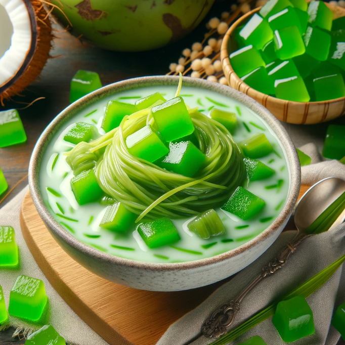

Overweight Meal Plans
Day 3
Home
Meal Plans
AM Snack

Buko Pandan
Ingredients
1/2 cup shredded young coconut (approximately 50 grams)
1/4 cup nata de coco, cubed (approximately 50 grams)
1/4 cup macapuno (also known as palm fruit pearls), drained and rinsed (approximately 50 grams)
1 tablespoon sago pearls, cooked according to package instructions
1 pandan leaf, knotted
3/4 cup water
1/4 cup sugar
1 tablespoon cornstarch
Pinch of salt
Nutrition Facts
Calories
300 kcal
Protein
5 g
Total lipid (fat)
5 g
Carbohydrate, by difference
1.55 g
Meal Procedure
In a saucepan, combine the water, pandan leaf, and sugar. Bring to a boil over medium heat.
In a small bowl, whisk together the cornstarch and a little cold water to form a slurry.
Once the sugar dissolves in the saucepan, slowly add the cornstarch slurry while stirring continuously to prevent lumps.
Reduce heat and simmer for 5 minutes, or until the mixture thickens slightly.
Remove the pandan leaf and discard.
In a bowl, combine the shredded coconut, nata de coco, macapuno, cooked sago pearls, and the cooled coconut milk mixture.
Chill for at least an hour to allow the flavors to meld.
Serve chilled and enjoy!